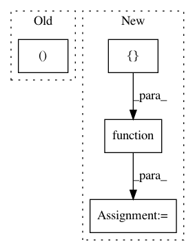

186056b878a0a9dd576b684106fb4ddaa4af246c,theano/gpuarray/tests/test_dnn.py,,test_dnn_batchnorm_train_without_running_averages,#,1480
Before Change
param_shape = (1, 10, 30, 25)
// forward pass
out, x_mean, x_invstd = bn.batch_normalization_train(x, scale, bias, "per-activation")
// backward pass
grads = T.grad(None, wrt=[x, scale, bias], known_grads={out: dy})
// compile
After Change
bn.batch_normalization_train(x, scale, bias, "per-activation")
// backward pass
grads_gpu = T.grad(None, wrt=[x, scale, bias], known_grads={out_gpu: dy})
grads_abstract = T.grad(None, wrt=[x, scale, bias], known_grads={out_gpu: dy})
// compile
f_gpu = theano.function([x, scale, bias, dy],
[out_gpu, x_mean_gpu, x_invstd_gpu] +
grads_gpu,
mode=mode_with_gpu)
f_abstract = theano.function([x, scale, bias, dy],
[out_abstract, x_mean_abstract, x_invstd_abstract] +
grads_abstract,
mode=mode_with_gpu)
// check if the abstract Ops have been replaced
assert any([isinstance(n.op, dnn.GpuDnnBatchNorm)
for n in f_abstract.maker.fgraph.toposort()])
assert any([isinstance(n.op, dnn.GpuDnnBatchNormGrad)
In pattern: SUPERPATTERN
Frequency: 3
Non-data size: 4
Instances
Project Name: Theano/Theano
Commit Name: 186056b878a0a9dd576b684106fb4ddaa4af246c
Time: 2017-01-30
Author: gvtulder@gmail.com
File Name: theano/gpuarray/tests/test_dnn.py
Class Name:
Method Name: test_dnn_batchnorm_train_without_running_averages
Project Name: bethgelab/foolbox
Commit Name: 2a99663be1eb9ed60af8a4ff64056cf3886b21c5
Time: 2019-05-17
Author: git@jonasrauber.de
File Name: foolbox/models/keras.py
Class Name: KerasModel
Method Name: __init__
Project Name: Theano/Theano
Commit Name: a8dc2e3b4bc4f70c4fce74d371600b05745d8b06
Time: 2017-05-19
Author: botevmg@gmail.com
File Name: theano/tensor/nnet/tests/test_neighbours.py
Class Name: T_Images2Neibs
Method Name: test_neibs_half_step_by_valid